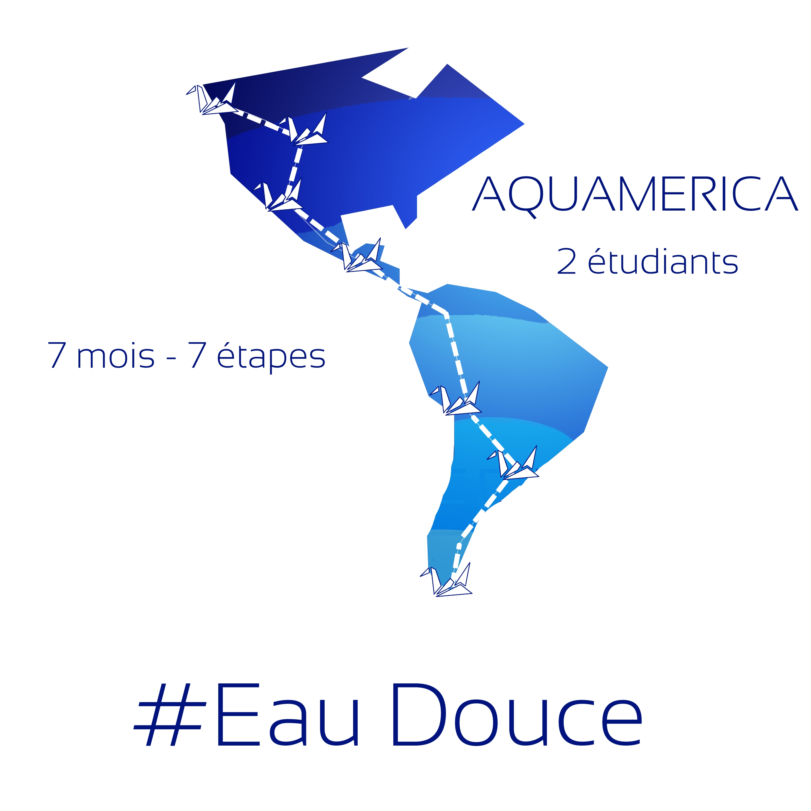

Un kilo de viande de bœuf : 15 000 litres d’eau douce
Une tasse de café : 140 litres
Un œuf de poule : 200 litres
Un t-shirt en coton de 250 grammes : 2500 litres
Un kilo de tomates : 215 litres
70%
Empreinte journalière d’un américain moyen en consommation d’eau douce: 7800 litres
Empreinte journalière d’un argentin moyen en consommation d’eau douce: 4400 litres
L’eau douce est une pièce centrale du développement. Nous sommes deux étudiants convaincus que sa gestion, son utilisation et sa répartition constituent un des enjeux majeur du 21ème siècle L’accès à cette ressource dessine le visage de l’économie mondiale : la moitié du débit mondial d’eau douce est concentrée dans seulement neuf pays.
Le projet Aquamerica veut observer les visages multiples de la répartition de l’eau. Santé, alimentation, agriculture, hygiène, industrie, tourisme… Comment l’accès à cette ressource, sa gestion et sa répartition influencent les sociétés ? En parcourant le continent américain du Nord au Sud, l’objectif de ce projet est d’observer, de questionner et de rendre compte de l’usage de cette ressource cruciale en parcourant l’Amérique.
En résumé : 7 mois – 15 000 km – 11 pays – 7 vidéos documentaires – 7 questions fondamentales
Un enjeu : L’eau douce
Découvrez notre projet !
